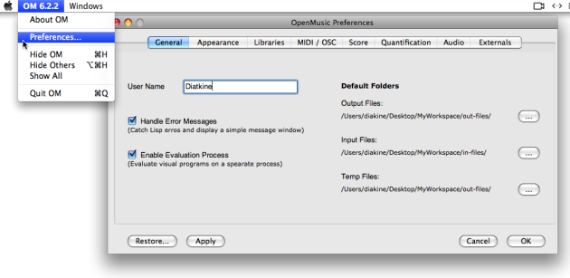

OpenMusic DocumentationHiérarchie de section : OM 6.6 User Manual > The OM Environment > Preferences
OpenMusic DocumentationHiérarchie de section : OM 6.6 User Manual > The OM Environment > Preferences
Navigation : page précédente | page suivante
Attention, votre navigateur ne supporte pas le javascript ou celui-ci à été désactivé. Certaines fonctionnalités de ce guide sont restreintes.
Preferences
The OM interface and programming components are ruled by a series of default parameters that can be modified via the Preferences pane during an OM session. These parameters are associated to and saved with the workspace that was open at this session.
Preferences Pane
Access

{kind=link}
To open the Preferences pane, select OM 6.X.X / Preferences . A series of tabs that give access to a set of preferences is shown on the left.
Preferences Tabs
General : user name, default storage folders, evaluation process control
Appearance : appearance of the workspace, patches, and maquettes
Libraries : libraries to be loaded automatically when starting a session, extra libraries folder
MIDI / OSC : MIDIShare and MicroPlayer preferences
Score : score editors preferences, such as staffs number, microtonal notation scale...
Quantification : musical data conversions default parameters, such as tempo (60 bpm) , measure (4/4) ...
Audio : general audio preferences
Externals : external sound processing applications communication
More information about each tab is provided within the corresponding sections.
Commands
-
Restore: resets the default preferences. -
Apply: applies the preference defined in the pane. -
Cancel: closes the pane without applying the preferences. -
OK: applies and saves the preferences.
Saving Preferences
The preferences are attached to the workspace and are saved with it during or at the end of the session.
Quit / Save
Reinitializing Preferences
The preferences are stored in the file preferences.lisp located in the Workspace folder. In case of problems when loading a former workspace with a new OM version, this file can be removed. The OM preferences will then be reinitialized.
Références :
Plan :
- OpenMusic Documentation
- OM 6.6 User Manual
- Introduction
- System Configuration and Installation
- Going Through an OM Session
- The OM Environment
- Environment Windows
- Preferences
- Workspace
- Library
- Tutorials
- Resources
- Visual Programming I
- Visual Programming II
- Basic Tools
- Score Objects
- Maquettes
- Sheet
- MIDI
- Audio
- SDIF
- Lisp Programming
- Errors and Problems
- OpenMusic QuickStart
Navigation : page précédente | page suivante
A propos...(c) Ircam - Centre Pompidou